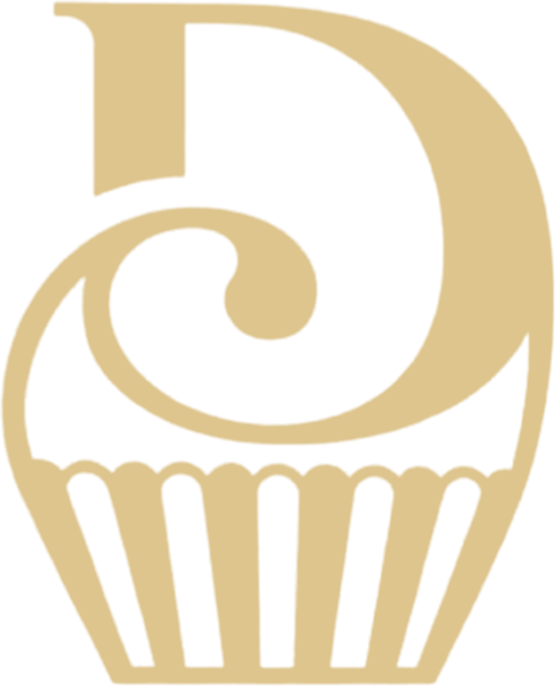

Atual · Archivo 900, centralizado, monograma em marca-d'água

DocinhosBrowniesPalhaCopo
Docinhos gourmet
Atual · Archivo 900, centralizado, monograma em marca-d'água
A · Editorial Luxury · Fraunces itálico (opsz 144, SOFT 50, WONK 1) + Fraunces romano (opsz 14)
B · Expressive Retro · Caprasimo + acento desenhado (gota) + selo com texto em arco
C · Assinatura · Ballet (opsz 72, ss01) + Cormorant versaletes (smcp) · vidro marrom
